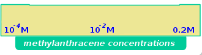
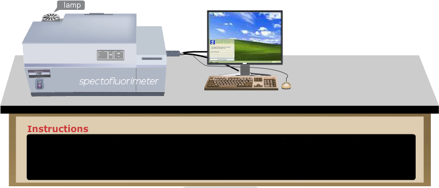

×
Manual
- Prepare three solutions with following concentrations of 9-methylanthracene in spectroscopic grade benzene: (i) 10-4M; (ii) 10-2M and (iii) 0.2 M. Here the solutions are shown on the concentration selection bar.
- To take a particular concentration solution, first click on the appropriate concentration on the concentration selection bar and then on the volumetric flask. For measurement, first start with the lowest concentration and then proceed from lower to higher concentrations.
- To carry out the emission measurements proceed as follows.
- Take an all-side-transparent quartz cuvette of path length 1 cm x 1 cm for the fluorescence measurement.
- Click on the 5 mL capacity pipette to collect 3 mL of the experimental solution which will be transferred into the quartz cuvette. In real operation, one has to set the volume to 3 mL in the pipette and an appropriate tip should be attached prior to dipping it in the solution.
- Click on the pipette to draw the solution into it.
- Click on the pipette to take it out of the volumetric flask.
- Click on the pipette again to transfer the solution into the cuvette.
- Turn on the spectrofluorimeter by clicking on the power button. In real operation, it takes approx. 30 min for initialization of the instrument.
- For placing the sample in the instrument, open the lid of the sample chamber of the spectrofluorimeter by clicking on the lid.
- To place the cuvette in the sample holder of the instrument, click on the cuvette.
- Close the lid of the sample chamber by clicking on the lid.
- Open the instrument set-up screen by clicking on the fluorescence icon on the computer monitor.
- Select the Emission Scan Mode on the screen.
- On the screen, enter the Excitation wavelength: 370 nm, Emission Start Wavelength: 380 nm and Emission End wavelength: 570 nm. One chooses the Excitation Slit(nm) and Emission Slit(nm) values (here 2.5 nm/2.5 nm) and the scan speed value (here medium ) also.
- To run the wavelength scan for the emission spectrum, click on 'OK' button on the set-up screen. One has to be sure that the solvent blank does not fluoresce in the wavelength range of interest.
- Click on 'Close' button when spectral scan is complete. In real operation, the scan data are stored in the computer. The instrument stores data and therefore asks for the Sample File name. One enters a file name to save the data.
- To take the cuvette out of the sample chamber, first click on the sample chamber lid to open it and then on the cuvette.
- Close the lid of the sample chamber by clicking on the lid.
- Click on 'Reset' button to start over the measurements.
- Select the next higher concentration solution for the measurement by clicking on the concentration selection bar and carry out the Emission scan. If one uses the same cuvette for all the measurements, prior to filling up of the cuvette with the solution, the cuvette should be rinsed a few times with the same solution to be analyzed.
- Repeat the Emission scan measurements for all the solutions.
- Collect all data by clicking on the Data tab.
- Plot all the spectra together.
- Find out the development of excimer emission band.
- Determine the wavelength shift on formation of excimer emission band.
- Discuss how the maximum emission wavelengths and the intensities of the excimer emission bands change with increasing fluorophore concentration.




